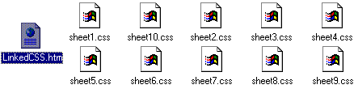

|
| ||
|
| ||
Nadja Vol Ochs
Design Consultant
Microsoft Corporation
October 14, 1997
The following article was originally published in the Site Builder Magazine (now known as MSDN Online Voices)"Site Lights" column.
I recently had the opportunity to present at two Web design industry conferences: Web97 Design and Development in Washington, D.C. and Seybold San Francisco 98 in San Francisco, California. The session at Web97, entitled Cascading Style Sheets: Layout and Design, provided an overview of Cascading Style Sheets (CSS) and Dynamic HTML (DHTML). The four-hour Seybold session, Designing with Dynamic HTML and Cascading Style Sheets, provided an in-depth tutorial covering DHTML, CSS, CSS positioning, and font embedding. I send thanks to everyone who attended these sessions. It was a pleasure to meet you, and to see all the interest and excitement about Web design possibilities using Cascading Style Sheets and Dynamic HTML.
This Site Lights column is dedicated to bringing those of you who attended the sessions, and other curious minds, the HTML content and samples I presented and discussed. Please note that these samples require Internet Explorer 4.0, and may not demonstrate properly in other browsers.To start off the sessions, I showed a simple splash page, which includes an enlarged GIF of one of my sister's paintings and an animated GIF composed of various Webdings  characters.
characters.
The large TV monitor graphic also comes from the Webdings font. Webdings is a free TrueType font that is installed with Internet Explorer 4.0, and it can be downloaded for free from the Microsoft Typography  Web site. To achieve the layout of this page, I used basic CSS positioning.
Web site. To achieve the layout of this page, I used basic CSS positioning.
The next page provides the title of the session, my name, and my e-mail address. This page looks similar to what you might see in a traditional slide show presentation, but it is composed entirely of HTML. By applying CSS filters, I created the typographic effects (the drop shadows and blurred edges). This page also uses an embedded style sheet to set type size and colors.
The main menu for both presentations uses a linked Cascading Style Sheet and demonstrates various negative-margin effects.Cascading Style Sheets are design templates that provide augmented control over presentation and layout of HTML elements. They allow you to separate the way you design information from the HTML content.
Using style sheets, you can create Web pages with minimal graphics, and therefore much smaller downloads. Style sheets also provide you with a higher level of typographic control, and they enable you to make changes to an entire site through the use of linked style sheets.
I urge you to visit the World Wide Web Consortium (W3C)  to learn about the CSS standard and the new CSS Positioning draft. Print out the specifications and drafts as resources, and use them as your springboard for learning about CSS. The site also has a wonderful set of references, ranging from books about CSS to other Web sites that use and teach CSS. (You'll also find references listed at the end of this article.)
to learn about the CSS standard and the new CSS Positioning draft. Print out the specifications and drafts as resources, and use them as your springboard for learning about CSS. The site also has a wonderful set of references, ranging from books about CSS to other Web sites that use and teach CSS. (You'll also find references listed at the end of this article.)
Creating dynamic styles is very easy! Once you understand CSS basics, all you need to know is a few lines of script -- and you can have any HTML tag change dynamically by applying CSS attributes to it. For example, inline script events allow you to dynamically change the style attributes of any HTML element when you touch it with the mouse (onmouseover) or move the mouse off of it (onmouseout).
For example, the following headline code:
<H4 onmouseover="javascript:this.style.color='#6633FF'" onmouseout="javascript:this.style.color='#000000'"> This headline will change to purple when the mouse touches it, and back to black when the mouse moves off of it</H4>
creates this headline:
You can find information in the styles section. Several of the samples that I demonstrated in the classes come directly from two previous Site Lights articles about Dynamic HTML (Filter It, Scale It, Move It, Hide It with Internet Explorer 4.0) and Dynamic Cascading Style Sheets (Is Your Site Made with Style?). For example, the swimming fish sample illustrates Cascading Style Sheet positioning, Dynamic HTML, and Structured Graphics plants. The DirectAnimation SDK  provides documentation, samples, and tutorials to help users get up and running with DirectAnimation and the new multimedia controls included in Internet Explorer 4.0.
provides documentation, samples, and tutorials to help users get up and running with DirectAnimation and the new multimedia controls included in Internet Explorer 4.0.
In my presentations, I used the Epicurious Food channel to illustrate dynamic movement of HTML elements. Part of the navigation for this channel is provided by a series of cafeteria trays sliding across the page. Dynamic HTML is used to activate the movement of the cafeteria tray GIF files, and for all the click events. Various CSS attributes are dynamically influenced via JavaScript. The position attributes of the cafeteria trays are manipulated via scripting. Also, when each tray is clicked, the static GIF is hidden, and an animated GIF is made visible. Download the Epicurious Food channel from the new Microsoft Active Channel Guide  .
.
Here are two additional samples demonstrating CSS.
Using more than one linked style sheet: This sample illustrates using more than one linked style sheet on the page. As you click on the arrow, the sample cycles through 10 different linked Cascading Style Sheets.

JavaScript functions working with an embedded style block: This sample illustrates how you can use JavaScript functions to call various parts of an embedded style block. This changes the design of the content without having to leave or refresh the page.
Two differing technologies and solutions are currently used to deliver fonts with Web pages. Netscape Navigator 4.0 supports Bitstream's TrueDoc  technology, and Internet Explorer 4.0 supports OpenType
technology, and Internet Explorer 4.0 supports OpenType  Font Embedding. Bitstream's TrueDoc technology is based on delivering outlines of font characters, which are then converted into bitmap versions of those characters. The OpenType Font Embedding technology enables you to deliver font subsets or a full font family with your Web content.
Font Embedding. Bitstream's TrueDoc technology is based on delivering outlines of font characters, which are then converted into bitmap versions of those characters. The OpenType Font Embedding technology enables you to deliver font subsets or a full font family with your Web content.
The goal of my presentation was to provide a good understanding of how Internet Explorer's OpenType Font Embedding works. Here are three easy steps to help you start embedding fonts in Internet Explorer 4.0.
<STYLE>
<!--
@font-face {
font-family: Mistral;
font-style: normal;
font-weight: 700;
src: url(MISTRAL.eot); }
-->
</STYLE>
Here are more references from the sessions:
Nadja Vol Ochs is the design consultant in Microsoft's Developer Relations Group.
Here are 10 of the many features CSS technology brings to Web design. Each feature in the list below links to a sample. Or you can click through the samples by using the navigational arrows at the top of each sample page.
Initial Caps achieved using float
You can find more information about filters in my previous Site Lights column Filter It, Scale It, Move It, Hide It with Internet Explorer 4.0.
Did you find this material useful? Gripes? Compliments? Suggestions for other articles? Write us!
© 1999 Microsoft Corporation. All rights reserved. Terms of use.